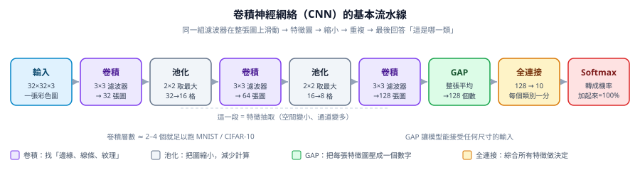

CNN 到底是什麼
一句話：CNN 就是「拿很多小濾鏡在圖上滑來滑去，把找到的特徵一層一層組起來」的機器。

這個實驗在做什麼
這章沒有訓練。只是把課本上的 nn.Sequential 拼出來，然後逐層追一次 shape，確認每個環節的輸入與輸出對得上，並數清楚參數長在哪裡。
- 輸入一張 32×32×3 的彩色圖（MNIST 則是 28×28×1 灰階）
- 操作Conv(3×3, padding=1) → BatchNorm → ReLU → MaxPool(2)，重複 3 次，最後接 GAP → Linear(10)
- 輸出每層的張量形狀 (B, C, H, W)、Flatten 後的長度、總參數量
- 判讀哪一層把尺寸砍半、哪一層吃掉最多參數（答案：第一個 Linear 吃掉 96%）
數字
| 層 | 作用 | 輸出 |
|---|---|---|
| 卷積 3×3 | 找邊緣、線條 | 32 張特徵圖 |
| 池化 2×2 | 把圖縮小一半（計算量降到 1/4） | 32 張，尺寸砍半 |
| 卷積（再一次） | 把線條組成轉角 | 64 張特徵圖 |
| GAP | 每張特徵圖平均成一個數字 | 128 個數字 |
| 全連接 | 綜合所有特徵做判斷 | 10 個分數 |
| Softmax | 把分數轉成機率 | 加起來 100% |
解説
想像你要認出一個字。你不會一次看完整張紙，而是：
- 先用小放大鏡找「這裡有沒有橫線、那裡有沒有斜線」→ 這就是卷積
- 把找到的線條組成「一個口字旁」→ 這就是更深的卷積層
- 再把「口 + 那」組成「這是『哪』這個字」→ 這就是全連接層
中間那個「把紙縮小再繼續看」的動作就是池化——省力氣用，反正細節已經記在腦中了。
學到什麼
CNN 最聰明的兩件事：同一個放大鏡用遍整張圖（權重共享）和只看附近、不管遠處（局部連接）。所以它的參數比「每個像素都接一條線」的全連接網路少非常多，也更容易學會「不管東西出現在哪裡都認得出來」。
STEP 05程式碼
train_cnn.py
定義模型（build_model）；--arch small|wide 切換 95k / 964k 兩種容量
cnn_check.py
用 forward hook 把每一層的輸出形狀與參數量印出來
執行方式：
python cnn_check.py